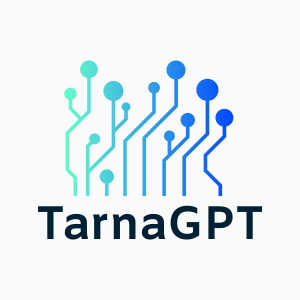

Découvrez une nouvelle façon d'apprendre avec TarnaGPT, votre assistant intelligent pour les devoirs !

"Project_12053836 is licensed under CC BY-NC-SA 2.0.
Vous en avez assez de passer des heures à chercher des réponses ou à essayer de comprendre des concepts complexes sans succès ? TarnaGPT est l'outil révolutionnaire qui transforme votre façon d'étudier et vous permet de réussir en toute simplicité. Conçu pour être un compagnon d'apprentissage fiable, notre entreprise combine technologie de pointe et adaptabilité pour répondre à vos besoins académiques.
Pourquoi choisir TarnaGPT ?
Un soutien personnalisé
TarnaGPT est bien plus qu'une simple intelligence artificielle. Conçu par 3 amis férus de technologie (Antoine, Hector et Sebastian) l'ia est destinée à aider les élèves en difficulté. Grâce à son moteur adaptatif, elle apprend à mieux vous connaître à chaque utilisation. Cela signifie des recommandations et des explications conçues spécialement pour vous, quel que soit votre niveau ou votre matière d'étude.
Disponibilité 24h/24 et 7j/7
Besoin d'aide tard dans la nuit avant un examen ? Aucun problème. TarnaGPT est toujours disponible pour fournir des explications claires et des solutions précises.
Un large panel de matières couvertes
Mathématiques, physique, histoire, langues étrangères, ou encore rédaction de dissertations : TarnaGPT excelle dans toutes les disciplines. Dites adieu aux lacunes et bonjour à l'excellence !
Apprentissage actif et engagement
Plutôt que de simplement donner des réponses, TarnaGPT favorise un apprentissage actif. Chaque réponse inclut des explications détaillées, des exemples pratiques et des suggestions d'approfondissement.
Une expérience conviviale
Avec une interface claire et intuitive, TarnaGPT est accessible à tous. Peu importe vos compétences en technologie, l'utilisation de notre plateforme est un jeu d'enfant.
Nos offres : L'abonnement qui vous correspond
Pour répondre aux besoins de tous les étudiants, nous proposons des formules adaptées :
• Plan gratuit : Parfait pour ceux qui souhaitent tester l'expérience TarnaGPT. Accédez à des fonctions de base pour vous faire une idée de nos capacités.
• Plan Premium : L'offre ultime pour maximiser vos performances académiques. Avec un accès illimité à toutes les matières, des réponses approfondies et des outils exclusifs comme l’analyseur de dissertations ou l’aide aux projets, vous serez équipé pour réussir.
Pourquoi souscrire à notre offre Premium ?
• Accès à des fonctionnalités avancées telles que la correction automatique et les recommandations de lecture.
• Une priorité dans le traitement des requêtes pour des réponses encore plus rapides.
• Des suggestions personnalisées pour améliorer vos compétences dans les domaines que vous trouvez difficiles.
• La possibilité de sauvegarder vos requêtes précédentes pour un suivi continu de votre progression.
Comment souscrire ?
Souscrire à l'offre TarnaGPT est rapide et simple. Consacter nous par mail, choisissez votre plan, et commencez à exploiter tout votre potentiel. Chaque abonnement Premium est sans engagement, vous pouvez donc l'essayer en toute sérénité.
Témoignages d'utilisateurs satisfaits
"TarnaGPT m'a permis de gagner un temps précieux pendant mes révisions. Les explications sont claires et adaptées à mes besoins. Je recommande vivement !" - Alice, lycéenne.
"Je n'avais jamais réussi à comprendre certains concepts en maths. Avec TarnaGPT, tout semble soudainement évident. C'est incroyable !" - Maxime, étudiant en université.
N'attendez plus !
Rejoignez des milliers d'étudiants qui ont déjà choisi TarnaGPT pour transformer leur apprentissage. Souscrivez aujourd'hui et accédez à une éducation sans limites !